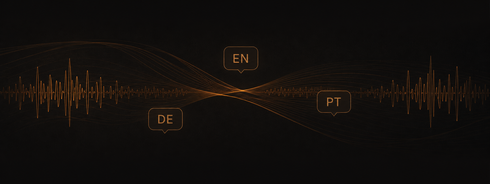

Fluency Academy
Educational Podcast
Podcast editing, voice production, mixing and audio post-production for multilingual educational content.

Audio Approach
Educational audio requires a different approach from entertainment content. Speech clarity and pronunciation were the priority, so the production focused on transparent dialogue restoration, careful noise reduction and consistent voice processing, while keeping sound design subtle and purposeful.
Voice Clarity
Dialogue cleanup and restoration with minimal audible processing.
Multilingual Production
Content produced across different languages and learner audiences.
Subtle Sound Design
Music and effects used mainly to support pacing, transitions and changes in momentum.
Selected Episodes
Fluency News English — Premier League
English-learning episode built around current-affairs content, with emphasis on clear voice delivery and natural pacing.
Fluency News Alemão — German for Portuguese Speakers
German-language educational content produced for Portuguese-speaking learners, requiring particularly careful pronunciation, clarity and vocal consistency.
Production Responsibilities
Voice Editing
Cleaning, restoration and dialogue enhancement.
Mixing & Mastering
Balancing speech, music and overall loudness.
Multilingual QA
Ensuring consistency, pronunciation and clarity across languages.
Sound Design
Subtle elements to support transitions and pacing.
Voice Consistency
Maintaining a consistent vocal tone and presence.
Final Delivery
Quality control and export for publication.